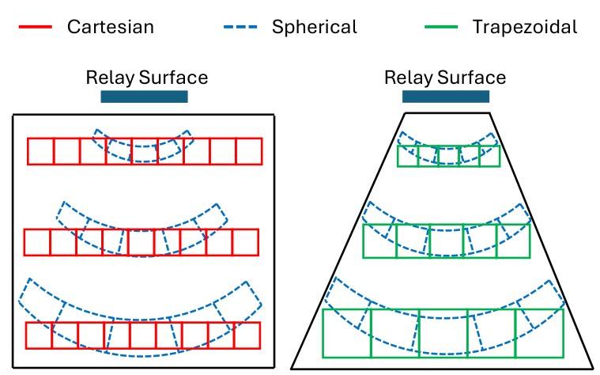
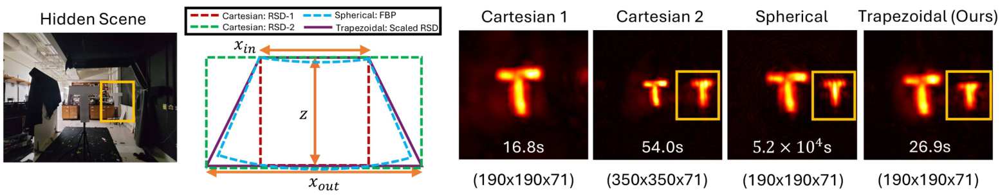
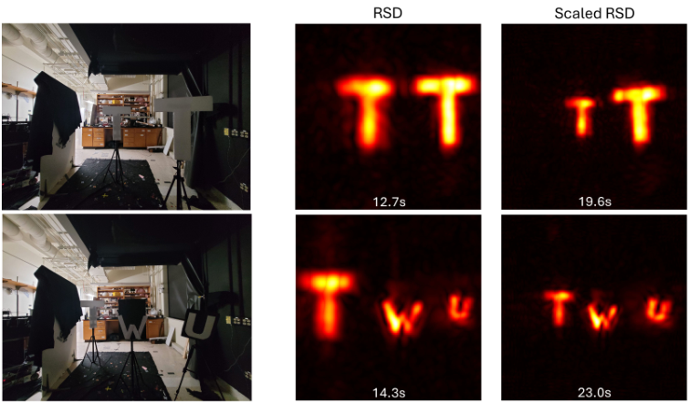

Conference presentation
Watch the talk.
Starts at 46:46 in the session recording. Watch on YouTube ↗
Overview
Match the grid to what the system can resolve.
Non-line-of-sight imaging recovers hidden scenes from light that bounces off a visible wall. Fast reconstruction methods use the FFT, but typically place the reconstructed voxels on a uniform Cartesian grid. As the hidden scene gets farther from the wall, the system’s lateral resolution becomes coarser—yet that grid keeps sampling at the same fine spacing.
We introduce Scaled Rayleigh–Sommerfeld Diffraction (Scaled RSD), combining RSD with the Scaled Fast Fourier Transform. The lateral voxel spacing increases with depth, producing a trapezoidal reconstruction volume. This reduces redundant sampling, retains FFT-based efficiency, and naturally yields perspective views in which distant objects appear smaller.
01 / Sampling geometry
More useful samples.
A wider field of view.
A spherical grid follows the resolution fall-off, but direct reconstruction on that grid is expensive. A trapezoidal grid approximates this geometry while keeping each depth plane uniformly sampled.
The key is to choose the scale with the system’s resolution in mind. Coarser sampling is useful only while it still captures the detail the measurements can resolve.

02 / Reconstruction coverage
The same number of voxels can show more of the scene.
At a fixed voxel budget, the Cartesian reconstruction misses the rightmost letter. Scaled RSD captures the wider scene; expanding the Cartesian grid also recovers it, but requires more voxels.

03 / Depth and perspective
Watch the target move away.
The same digit “2” was measured at seven depths. Move through the experimental results: Scaled RSD and spherical filtered backprojection (FBP) render the target smaller at greater distances, matching the reference camera’s perspective.

Each step shows a measured reconstruction from the manuscript, not a simulated transition. All three reconstruction methods use a 190 × 190 × 68 voxel budget. Scores printed in the panels are updated full-image SSIM values relative to spherical-grid FBP. View the full depth comparison.

04 / Natural perspective
A view that looks
more like a photograph.
A maximum projection through a Cartesian volume produces an orthographic view. The depth-scaled grid produces a perspective-like view directly: equal-sized letters look smaller when they are farther away.
In the second scene, letters of different physical sizes are positioned to appear equally sized from the relay wall. Scaled RSD preserves that relationship.

Transient light transport
Watch light move through the hidden scene.
Time-resolved reconstructions of the office scene using Standard RSD and Scaled RSD. The timestamp in each frame shows the reconstructed light-transport time.
Standard RSD Cartesian grid
Scaled RSD Trapezoidal grid
Color bars show the intensity scale for each reconstruction.
What changes—and what stays the same?
Scaled RSD changes where the reconstruction is sampled. It does not improve the underlying optical resolution. The benefit is a better allocation of voxels: a larger field of view for a fixed sample budget, or fewer samples for a chosen volume.
Citation
@inproceedings{sultan2026trapezoidal,
title = {Trapezoidal Grid Reconstruction for Efficient
Non-Line-of-Sight Imaging},
author = {Sultan, Talha and Gu, Chaoying and Bocchieri, Alex
and Liu, Xiaochun and Polynkin, Pavel and Velten, Andreas},
booktitle = {2026 IEEE International Conference on
Computational Photography (ICCP)},
year = {2026},
pages = {1--12},
doi = {10.1109/ICCP69532.2026.11668867}
}